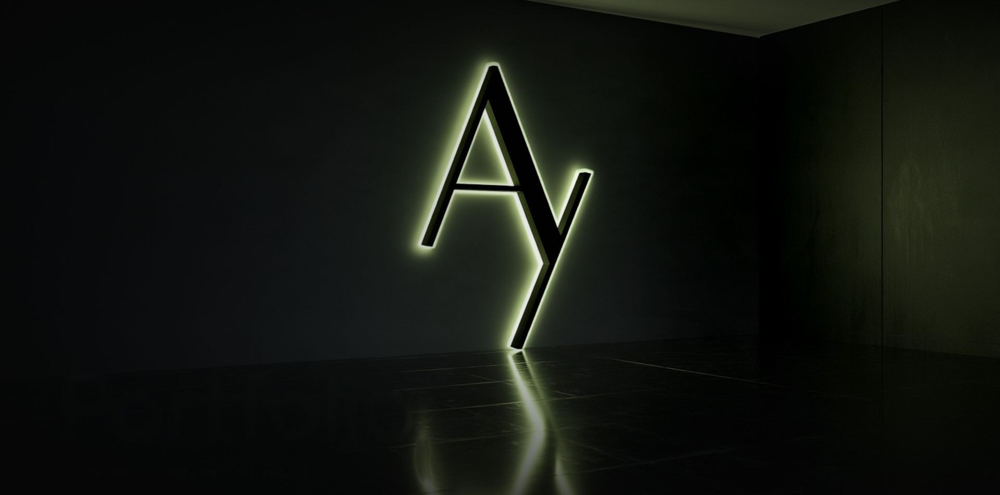
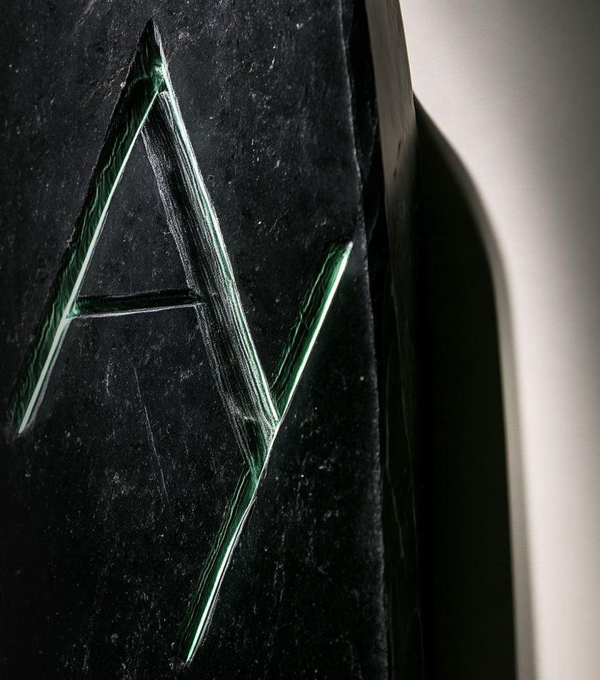
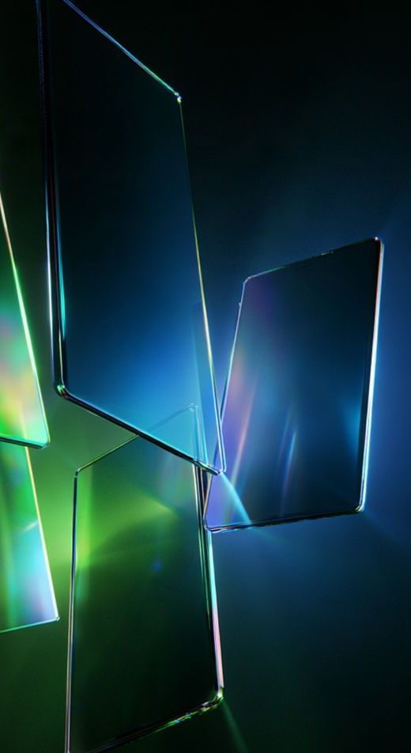
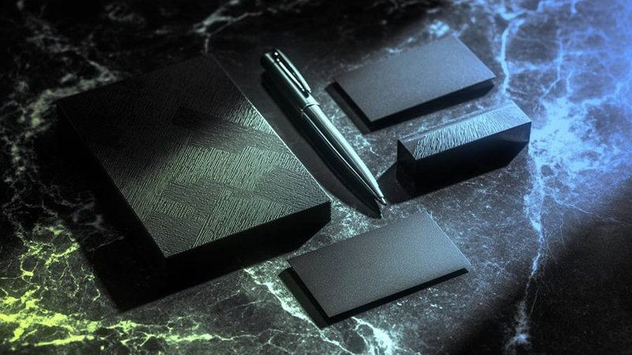
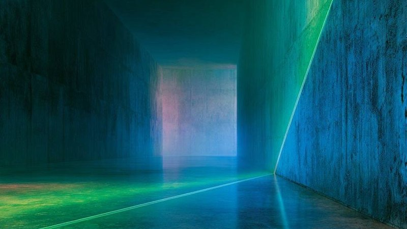
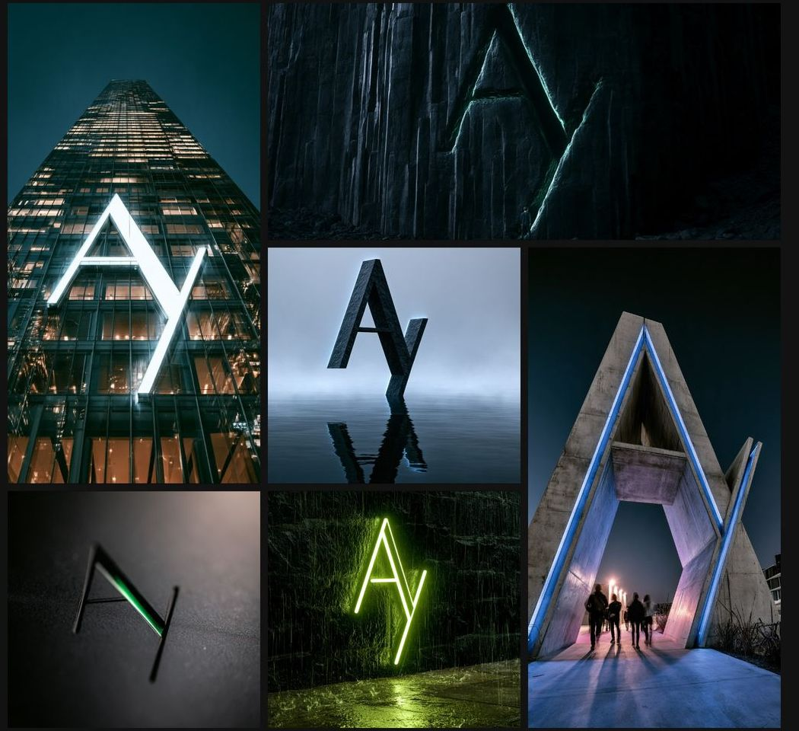

نصمم
هويات
هويات بصرية، حملات سوشيال ميديا، مطبوعات، وعروض تقديمية — لجهات حكومية وعلامات تجارية رائدة.

البساطة
هي المفتاح.
AY. Design — استوديو تصميم جرافيك إبداعي. نبني هويات بصرية قوية، ونصمم حملات سوشيال ميديا جذابة، وننتج مطبوعات احترافية وعروضاً تقديمية مؤثرة. بخبرة تتجاوز ١٠ سنوات وخدمة أكثر من ٥٠ علامة تجارية، نحوّل الأفكار إلى قصص بصرية تلهم وتحقق النتائج.
وثقوا
فينا.
وزارات وهيئات وبنوك وشركات رائدة في السعودية — أكثر من ٥٠ علامة تجارية على مدى ١٠ سنوات.
أفكار واضحة،
بعناية في التنفيذ.
سوشيال ميديا
محتوى بصري استراتيجي لمنصات التواصل يعزز التفاعل ويبني العلامات التجارية.
اعرف أكثر ← 02هوية بصرية
أنظمة هوية متكاملة — شعارات، قرطاسية، أدلة العلامة، ولغة بصرية تدوم.
اعرف أكثر ← 03مطبوعات
بروشورات، كتالوجات، بانرات، رابّ سيارات، ومواد مطبوعة بدقة وحرفية.
اعرف أكثر ← 04عروض تقديمية
عروض بصرية مبنية على البيانات توصل الأفكار بوضوح وتأثير.
اعرف أكثر ← 05تصميم بالذكاء الاصطناعي
نوظّف أحدث أدوات الذكاء الاصطناعي (Midjourney، DALL·E، Firefly) لإنتاج تصاميم مبتكرة بجودة احترافية وسرعة قياسية.
اعرف أكثر ← 06تصميم مواقع إلكترونية
تصميم وتطوير مواقع عصرية وسريعة — صفحات هبوط، بورتفوليو، ومتاجر متجاوبة مع كل الأجهزة.
اعرف أكثر ←
علامة واحدة.
بكل الخامات.
توقيع AY مجسّماً بثلاثة أبعاد، يتشكّل بالضوء. نفس العلامة تتكيّف مع كل هوية نبنيها.
كيف
نشتغل.
الفهم
نبدأ بفهم علامتك، جمهورك، وأهدافك قبل أي قلم على ورق. نطرح الأسئلة الصحيحة لنبني أساساً متيناً.
الاستراتيجية
نبني مساراً بصرياً واضحاً يعكس شخصيتك ويميّزك عن المنافسين. نحدد الاتجاه الإبداعي والرسائل البصرية.
التصميم
نُنتج تصاميم دقيقة ومتكاملة — من الشعار للمطبوعات للسوشيال. كل بكسل في مكانه الصحيح.
التسليم
ملفات جاهزة بكل الصيغ، مع دليل هوية بصرية كامل. مشروعك جاهز للانطلاق.
نكتب عن
التصميم.

كيف تبني هوية بصرية تدوم لعقود؟
الهوية البصرية أكثر من مجرد شعار؛ هي روح العلامة التجارية ولغتها البصرية. نستعرض العناصر الأساسية لبناء هوية راسخة.
اقرأ المقالة ←سر التصميم الذي يوقف السكرول
في عصر المحتوى اللامحدود، أصبح جذب الانتباه في أقل من ثانيتين هو الفيصل. كيف نصمم محتوى يوقف الإبهام؟
اقرأ المقالة ←الذكاء الاصطناعي في التصميم: شريك لا بديل
كيف نستخدم Midjourney و Firefly و DALL·E لتسريع الإبداع بدون التضحية بالهوية البشرية للتصميم؟
اقرأ المقالة ←لماذا لا تزال المطبوعات تهم في عصر رقمي؟
في عالم الشاشات، أصبح التصميم الملموس أقوى وأندر. كتالوج مصقول يترك انطباعاً لا يستطيع بريد إلكتروني منافسته.
اقرأ المقالة ←عرض تقديمي يقنع بدلاً من يُقرأ
أغلب العروض التقديمية فاشلة لأنها مكدسة بالنصوص. كيف نصمم عرضاً يحرّك الجمهور ويغلق الصفقات؟
اقرأ المقالة ←
كيف تختار استوديو تصميم مناسب لمشروعك؟
قرار اختيار مصمم يحدد مصير مشروعك البصري لسنوات. خمسة معايير تساعدك تميّز بين الاستوديو الاحترافي والهاوي.
اقرأ المقالة ←آراء
العملاء.
AY. Design حوّل هوية علامتنا التجارية بالكامل. التصميم احترافي ويعكس شخصيتنا تماماً.
سرعة في التنفيذ، دقة في التفاصيل، وإبداع لا يتوقف. أنصح بالتعامل مع AY. Design بشدة.
من أفضل التجارب في مجال الجرافيك. الفهم العميق للهوية البصرية يجعل الفرق واضحاً.
ابدأ
مشروعك.
جاهزين نحوّل فكرتك إلى هوية بصرية تتكلم عنك. ابدأ الخطوة الأولى وتواصل معنا الحين.
